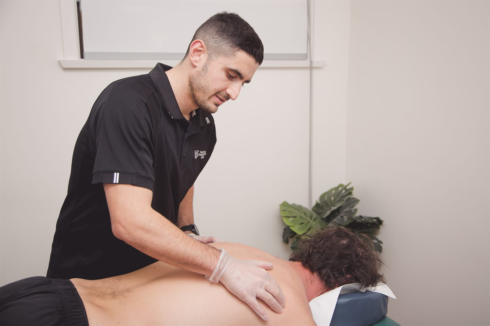

Lower back pain, neck pain or sciatica? At our Dapto clinic, we examine your symptoms, discuss treatment and work out what you can do at home. We also check for signs that need medical attention.

Your symptoms and examination guide the next step, including whether imaging or a medical referral is needed.
Most neck and back pain has no serious underlying cause. We ask when it started, where it travels and which activities are difficult, then examine movement, strength and nerve function where relevant. We discuss what the findings mean and how to manage activity while symptoms settle.
Imaging is a good example. Scans of pain-free adults routinely show disc bulges, degeneration and facet joint changes, and the proportion showing them rises steadily with age. A scan finding does not always explain the pain. Imaging is usually unnecessary for uncomplicated low-back pain, but it can be important when we suspect a serious cause or the result would change management. We explain when a medical referral or scan is appropriate.
Severe pain does not, by itself, show how much tissue damage there is. Pain can also be influenced by sleep, stress and activity. That does not make it less real. An assessment helps identify warning signs and gives us a starting point for treatment.
Sudden pain, a recurring ache or symptoms that have lasted for months each need a different discussion.
Lower back pain arrives in a few recognisable patterns. There is the sudden episode (a lift, a twist, a sneeze) where the back locks up and every movement is guarded. There is the gradual ache that builds over weeks of sitting, driving or repetitive work. There is the recurrent back that settles and returns two or three times a year. And there is persistent pain that has been present for months and can affect sleep, work and confidence in movement.
Each responds to a different emphasis. An acute locked back needs pain relief, gentle restoration of movement, and reassurance that it is safe to move. A load-related ache needs the load addressed and the supporting capacity built. A recurrent back needs the pattern investigated, not just the current episode treated. Persistent pain needs graded exposure, education and time, with regular review of what is helping.
Typically a combination: hands-on manual therapy and, where it helps, dry needling to reduce pain and stiffness enough to move properly; then progressive exercise to restore range, control and strength; then a plan for keeping it that way. We choose exercises you can fit into your day and adjust them as your symptoms and activities change.
Sciatica is a symptom, not a diagnosis, irritation of the sciatic nerve or the nerve roots that form it.
True sciatica is pain that travels from the lower back or buttock down the back of the leg, often below the knee, and it may be accompanied by pins and needles, numbness or weakness. It is usually caused by irritation or compression of a lumbar nerve root, most often by a disc bulge, sometimes by narrowing of the space the nerve passes through. Not all leg pain is sciatica, referred pain from the joints or muscles of the lower back can feel similar but behaves differently, and telling them apart changes the treatment.
The good news is that most sciatica settles. Nerve-related symptoms often improve over weeks to a few months, and physiotherapy is a first-line treatment. We use positions and movements that reduce nerve irritation, hands-on treatment for the joints and muscles contributing to it, specific nerve mobility work once irritability has dropped, and then a progressive program to restore strength and control. Just as importantly, we help you manage the day-to-day: how to sit, sleep and drive while it settles.
A small proportion of cases need medical or surgical input: progressive weakness in the leg, symptoms that are not improving over a reasonable period, or the red flag symptoms listed below. We monitor for those specifically, and we will refer you promptly rather than persisting with treatment that is not working.

Work and travel can mean long periods in one position. Plenty of local residents commute: a short run into Wollongong, or a long one up the South Coast line or the highway to Sydney, and then sit at a desk at the other end. That is a lot of sustained flexion with the arms out in front, day after day, before you add a phone and a laptop in the evening.
If your neck or shoulders ache during that routine, tell us when it starts and what changes it. We look at movement, strength and nerve symptoms as well as your desk or driving setup. Changing position and taking breaks may form part of the plan; there is no single posture that suits everyone.
If you also have headaches, we assess whether your neck may be contributing. Read about our assessment of neck-related headaches.
Rare, but important. If any of the following apply, do not wait for a physiotherapy appointment.
Go to an emergency department immediately if back pain comes with new difficulty passing urine, loss of bladder or bowel control, numbness around the groin, inner thighs or buttocks, or rapidly worsening leg weakness. These can be signs of cauda equina syndrome, a medical emergency. You do not need to have all of them. Call 000 if you cannot get to emergency care safely.
Also see a doctor promptly, rather than starting physiotherapy, if your back or neck pain follows significant trauma such as a fall or car accident, if it is accompanied by fever or unexplained weight loss, if you have a history of cancer, if you have osteoporosis and the pain began suddenly, or if the pain is severe, unrelenting and clearly worse at night. These features are uncommon, but they are the ones worth knowing.
Do not delay emergency care to call the clinic if you have the symptoms above. For other concerns about whether physiotherapy is appropriate, call before booking.
Spinal pain overlaps with several of the other things we treat and fund at the Dapto clinic.
Vestibular physiotherapy for BPPV and balance disorders, plus treatment for neck-related headaches.
Read moreFunding pathwayWorkers compensation physiotherapy focused on a safe, sustainable return to work.
Read moreServiceDry needling for selected muscle-related symptoms, used alongside physiotherapy and exercise.
Read moreBook an appointment to discuss your symptoms, treatment options and the activities you want to get back to.